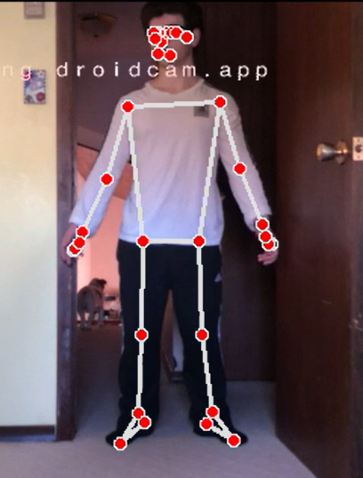

Best of Fair · 2026 Algoma STEM Fair
AI Fall Detection System
A real-time computer vision system that uses pose estimation and a custom-trained neural network to detect falls from a webcam feed and automatically send an emergency email alert with no wearable device required.
PythonPyTorchMediaPipeOpenCV